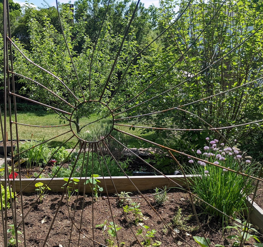
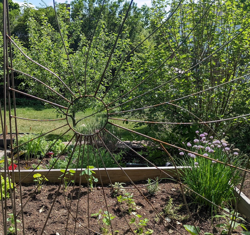

Don't be jealous -- make a trellis!
DIY Garden Trellis Fabrication
 

{kind=link}
A community-resilience, family-friendly workshop
June 18th, 2022 -- 10 AM - 1 PM
Lincoln, MA
RegisterFATQ (Frequently Asked Trellisin' Questions)
What should I bring?
- Clothes you don't mind getting dirty. (Ideally only cotton/wool/leather clothing, no synthetics if possible.)
- Work boots and gloves if you can.
- Safety glasses if you have them! And regular glasses, if you need them for close up work.
- Any welding personal protective gear (PPE) you might happen to have.
- Ideas, creativity, and ingenuity!
- Cash or Venmo for donations.
Do I need any welding or metalworking experience?
Literally none at all, this is a perfect project for a complete beginner.
Can I make a trellis of ______ shape/size?
Probably! The materials are available only in 12-foot lengths, so that limits the overall size, but then again we can probably weld two pieces together to overcome that obstacle if you're set on a larger design. Generally we're leaning towards making trellises that insert into the ground, but they can be wall-mounted if you make or buy a bracket.
Will I learn to weld?
Not exactly, but you'll have a chance to try it, watch it, and learn about it. We only have one welding machine, so it'll probably make more sense to have a dedicated welding person or two, with other people doing more bending, shaping, designing, iterating.
Will these trellises rust?
Yes, unless you paint yours! Rust isn't necessarily a problem -- rusty metal doesn't necessarily look out of place in a garden, and while rust will eventually erode the trellis completely, this process can take many years. If you want to paint yours to prevent rust, we recommend doing it soon after manufacturing, and using spray paint or a brush-on paint designed for metal. Painting won't be covered extensively in this workshop.
RSVP now to reserve your spot!
We're simply using the Google Form below to gather emails and a head count, so that we can let folks know about any scheduling changes, or if the workshop looks like it'll be full. We'll send out updates closer to the day of the workshop with the workshop location and other details. Thanks!